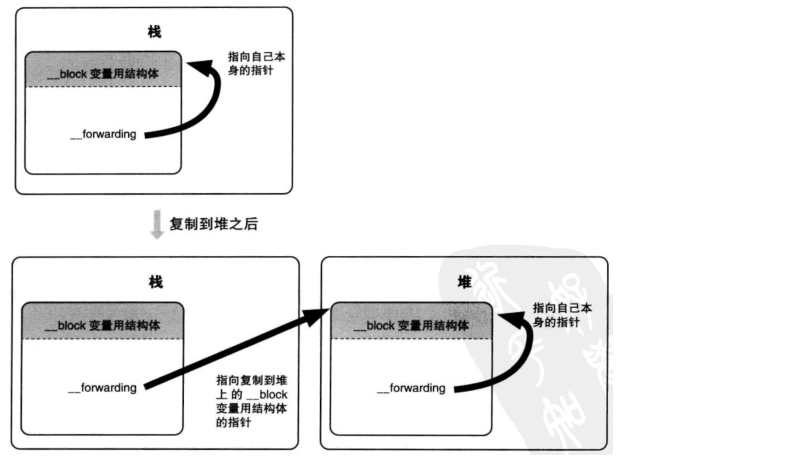

0x01 Block结构
我们通过命令将Objective-C代码转换为C++代码，看下底层block的结构
xcrun -sdk iphoneos clang -arch arm64 -rewrite-objc main.m -o main.cpp
测试代码如下：
1 | int main(int argc, char * argv[]) { |
转换后的代码如下：
1 | struct __block_impl { |
main函数中初始化了__main_block_impl_0结构体，通过与结构体同名的构造函数将函数实现(__main_block_func_0)地址和函数描述(__main_block_desc_0_DATA)地址传递进了__main_block_impl_0结构。
我们的block函数被转换成了单独了一个函数__main_block_func_0并赋值给block结构体内FuncPtr成员，这样做我们想必也知道以后要是调用这个函数，直接调用结构体的FuncPtr成员即可。为了证明这点，我们将测试代码改成如下：
1 | int main(int argc, char * argv[]) { |
我们继续转换代码，这次主要看下main函数里面的实现：
1 | int main(int argc, char * argv[]) { |
并且在前面的结构体内发现了isa，我们知道只要OC对象都会有一个isa指针，所以我们可以知道block本质上也是一个OC对象。
0x02 捕获变量
1. auto修饰词
我们知道局部变量前面默认都是有个auto修饰符的，所以我们写下如下测试代码：
1 | int main(int argc, char * argv[]) { |
在转换代码里，结构体多了个名为age的成员变量，并且main函数里对block结构体初始化的时候就把10这个值传递进去了，取来用的时候直接调取结构体age这个成员变量。初始化完成后，结构体内的age成员和main函数里定义的age变量其实已经没啥关系了，所以这也是为什么，之后修改变量age这个值，block内读取age的值是不会变的。
2. static修饰词
修改测试代码，加上static修饰词
1 | int main(int argc, char * argv[]) { |
这次，同样新增了一个age的成员变量，但是跟之前不同的是这次是一个指针成员，初始化的时候直接将变量的地址传递了进去，我们知道如果使用指针传递，我们可以随时随地的修改这个变量内的值，并且读取的时候也是被改变后的值，因为block内部直接访问的是变量的地址。所以，这里就跟前面不一样了，后面修改了值，调用block后，block内部读取变量的值是修改后的值。
3. 全局变量
测试代码修改如下：
1 | int age = 10; |
转换后的代码里，全局变量同样还是全局变量，并没有被吸收进结构体内。既然是也是全局变量，那么这个变量也是想怎么改就怎么改，block内部读取的值也是最新被赋值的值。
property属性
这次将代码修改为如下，方便可以添加属性：
1 | @interface ViewController () |
使用属性的时候，block结构体多了一个self的成员变量，初始化的时候将控制器实例传递了进去。读取值的时候通过消息发送机制获取最新的成员变量的值。
0x03 block类型
1. NSGlobalBlock
block内部没有调用auto修饰符变量的block都是NSGlobalBlock类型。
这里不使用clang转换代码，因为block都是运行时确定的，所以通过打断点确定block类型。
1 | int main(int argc, char * argv[]) { |
2. NSStackBlock
首先，我们需要将Xcode里ARC改为MRC
测试代码如下
1 | int main(int argc, char * argv[]) { |
也就是block内部使用了auto修饰符的都是 NSStackBlock类型。
3. NSMallocBlock
NSStackBlock调用copy得到的就是NSMallocBlock类型。
1 | int main(int argc, char * argv[]) { |
0x04 Copy
在ARC下，下列情况会自动将block从栈区复制到堆区。
- block作为返回值
- 赋值给strong强引用对象
- 在Cocoa里作为方法的参数（包括GCD）。
所以下面的情况，肯定不会自动复制到堆区
1 | int main(int argc, char * argv[]) { |
那么，如果对Block的三种类型进行copy操作会有什么效果：
1 | // NSGlobalBlock |
所以三种block类型使用copy的结果如下：
- NSGlobalBlock使用copy还是NSGlobalBlock
- NSStackBlock使用copy，变为NSMallocBlock
- NSMallocBlock使用copy还是NSMallocBlock，只是引用计数+1
我们知道ARC下，会自动将block从栈区拷贝到堆区，同时block内部的成员会调用copy函数将成员也拷贝到堆区。
1 | int main(int argc, char * argv[]) { |
copy函数内部会调用_Block_object_assign函数，这个函数会根据auto 对象的修饰符(strong，weak,unsafe_unretained)做出相应操作，形成强引用还是弱引用。这里先讲auto修饰的对象，当block被拷贝到堆区的时候，其内部也会调用__main_block_copy_0函数将内部的Animal *a对象也拷贝到堆区，同时引用计数+1，我们看下源码，_Block_object_assign函数第三个参数flag，这里是3，即BLOCK_FIELD_IS_OBJECT。其他的情况在__block修饰的时候讲。
1 | enum { |
我们可以看到其内部通过_Block_retain_object函数强引用了Animal *a对象。那么还有一种__weak修饰的变量，代码如下：
1 | int main(int argc, char * argv[]) { |
可以看到，Animal *a是被weak修饰的，所以block对a成员的持有是弱引用。所以我们需要记住，auto修饰的对象，如果不是weak修饰过的，那么block内部会对对象强引用。那么先看下面这段代码：
1 | int main(int argc, char * argv[]) { |
对象会在出了对象后被销毁，那么如下代码会发生什么，出了括号后会被销毁吗？
1 | int main(int argc, char * argv[]) { |
根据上面讲的，想必大家都知道这里Animal对象不会被销毁。因为auto修饰的对象，会被block强引用。
还有一个，如果要从堆上移出会调用block内部的dispose函数，内部调用_Block_object_dispose函数，会自动释放引用的auto变量，作用类似于release，具体不详细表述了。
0x05 __block修饰符
前面我们说过，通过static修饰的局部变量和全局变量被block捕获后，外部修改变量的值后，block内部读取的时候也是最新的值，但是实际需求中，我只是临时使用下这个变量，函数执行完毕后，这个变量销毁就可以了，不希望变量被放到全局区，所以这时候需要通过__block来修饰。
1. 修饰局部变量
还是代码走起
1 | int main(int argc, char * argv[]) { |
这里就很有趣了，__block修饰的变量会被改成一个结构体，而且该结构含有isa成员，那么这个变量很明显被转换成一个OC对象了，原本的变量也被包含在这个对象内，而且对于这个成员的管理，block这个对象默认是强引用这个变量，这个是不同于没被__block修饰的变量。
1 | Animal *a = [Animal new]; // block会对其强引用 |
对__block修饰的变量的修改，也就是对这个对象的age成员的修改((age.__forwarding->age) = 20;)。同时这个对象还有一个forwarding指针，这个的作用就是指向自己，如果在栈区就指向在栈区的实例地址，如果在堆区就指向在堆区的实例地址，下面源代码里也会证明这一点：

同时，也可以发现_Block_object_assign的第三个参数flag变为8了，即BLOCK_FIELD_IS_BYREF，继续看源码
1 | void _Block_object_assign(void *destAddr, const void *object, const int flags) { |
我们__block修饰的变量不仅被转换成一个对象结构体，并且第一次使用的时候还会被拷贝到堆上。这里还需要注意一个地方，就是如果是同一个变量被多个block捕获，那么这个变量在堆上只存在一份地址，block对其只是引用计数加1，而不是说多个block捕获这个变量，这个变量就会被多次拷贝到堆上。
最后，因为这个变量被拷贝到堆区了，所以需要将变量转换后的结构体里的forwarding指向这个堆区地址，由于只是拷贝操作，所以栈上存在一份，堆上也存在一份。因此，如果__block修饰的对象或变量在栈区，则forwarding执行栈区地址，如果被复制到的堆区，则栈上的forwarding指向堆区地址，被拷贝到堆上的对象的forwarding则指向自己在堆上的地址。
2. 修饰对象
同样的如果__block修饰的是对象的话，又会是什么样的结构？
1 | int main(int argc, char * argv[]) { |
同样block修饰的对象也被转换成一个结构体，这个结构体不同之处就是多了两个函数__Block_byref_id_object_copy和__Block_byref_id_object_dispose，用来管理结构体的成员 Animal a的内存，之前因为是变量所以不需要管理，只需要管理其所在的结构体内存就可以了。其他跟之前也一样，对象被拷贝到堆区。不同于__main_block_copy_0和__main_block_dispose_0，__Block_byref_id_object_copy和__Block_byref_id_object_dispose是用来管理Block_byref_a_0结构体内的Animal a成员的声明周期，而__main_block_copy_0和__main_block_dispose_0管理的是__Block_byref_a_0的生命周期。
我们看下多出两个函数的源码，里面同样调用了_Block_object_assign函数，只是flag变为了131，其实就是BLOCK_BYREF_CALLER | BLOCK_FIELD_IS_OBJECT，那么前面的40又是什么？首先dst指向的就是__Block_byref_a_0地址，回到这个结构体，发现+40其实就是成员Animal *a的地址
1 | struct __Block_byref_a_0 { |
进入源码后就会执行如下代码：
1 | void _Block_object_assign(void *destAddr, const void *object, const int flags) { |
观察下面的测试代码：
1 | typedef void(^HelloBlock)(void); |
不卖关子，直接说结果，调用contructBlock1方法后再执行block，会闪退；而调用contructBlock2方法则是正常运行。这是因为static修饰的变量不会被block持有，离开作用域后再访问这个变量就会有问题；而__block修饰的变量，会被block持有，所以即使离开了作用域也没关系。
总结：
当在栈上的时候block对象不会对auto和block修饰的变量强引用
当auto和block修饰的变量拷贝到堆上的时候，就会产生强引用
_Block_object_assign((void)&dst->a, (void)src->a, 3);
_Block_object_assign((void)&dst->a, (void)src->a, 8);
当auto和block修饰的变量需要从堆上移出的时候
_Block_object_dispose((void*)src->a, 3);
_Block_object_dispose((void*)src->a, 8);
0x06 循环引用
首先，创建一份会循环引用的代码：
1 | typedef void(^HelloBlock)(void); |
这里因为用到了强引用和弱引用，设计runtime，所以clang转换命令改为如下:
xcrun -sdk iphoneos clang -arch arm64 -rewrite-objc -fobjc-arc -fobjc-runtime=ios-8.0.0 main.m
1 | struct __ViewController__viewDidLoad_block_impl_0 { |
我们看到转换代码中，block结构体内是强引用了self。而self又本来就强引用block的，所以这就造成了循环引用。一般解决方法是加上__weak。
1 | - (void)viewDidLoad { |
加上__weak，block结构体弱引用self了，这就解决了循环引用问题了。
同样，在MRC下，只要加上block修饰符也可以解决循环引用问题，如下代码：
1 | - (void)viewDidLoad { |
这是因为，self被转换为一个结构体并复制到堆上，并且由__Block_byref_id_object_copy和__Block_byref_id_object_dispose对这个self进行管理，需要注意的是MRC下__Block_byref_vc_0对ViewController *vc是弱引用，这不同于ARC。所以只要block执行完毕后，会调用__ViewController_viewDidLoad_block_dispose_0对__Block_byref_vc_0进行销毁，接着__Block_byref_vc_0会调用__Block_byref_id_object_dispose函数对self进行销毁，所以不存在循环引用的问题了。